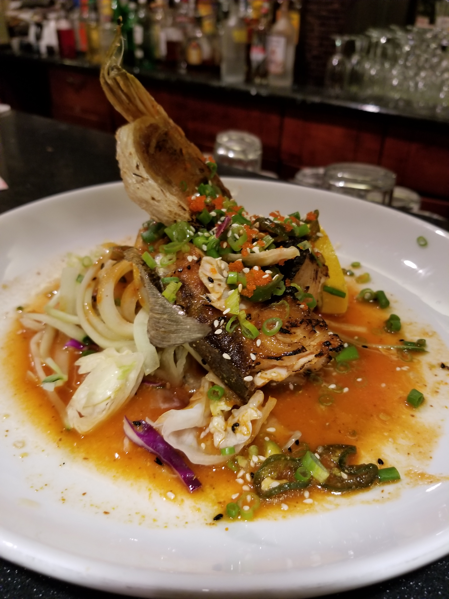

Restaurant Description
Kobe Japanese Steakhouse was established in 2004 and has proudly been serving the lowcountry area for 15 years. Celebrate your birthday or any special occasion with us at one of our hibachi tables. We have 10 hibachi tables and a private party room for parties of 20 or more. Looking for something quieter? Come see our full size sushi bar and regular dine in tables. We have weekly sushi specials and happy hour from 4:30 PM - 6:00 PM so book your reservation with us now and see why we have been rated the Best of Bluffton for the past 10 years.